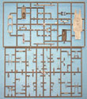

{kind=link}
{kind=link}
{kind=link}
{kind=link}
{kind=link}
You may click on these small images to view larger pictures.
{kind=link}
{kind=link}

Azur 1/48 Scale Potez 631 Night Fighter
Kit #058 MSRP $56.95
Images and text Copyright © 2006 by Matt Swan
Developmental Background
The prototype of this plane goes back to 1934 at which time the French Air Force organized a contest for a three-seat reconnaissance and ground attack aircraft. The Bréguet-690, Romano-110, Loire-Nieuport-200 and the Hanriot-220 all resulted from this program but the Potez-63 is the most famous. The prototype of the Potez 63 series first flew on 25 April 1936. Production commenced soon after that in 1937 and it arrived for active duty during November 1939. Ten different prototypes were built culminating with the 63/11 version with a panoramic glass nose.
A low wing monoplane of entirely metal construction the 63 series was powered by two 700 hp Gnome-Rhone 14 cylinder radial engines and had a wingspan of 16m and a length of 10.93m. Three major versions of the 63 were produced, the 631C3 three seat fighter control aircraft, 631C2 two seat daylight interceptor and the 631CN2 two seat night fighter. The 632CN2 was very similar in size and performance to the RAF's Bristol Blenheim. By the outbreak of the war approximately 206 631s were in service and saw constant action. Unfortunately due to the external similarity to the Messerschmitt 110 the aircraft was prone to take friendly fire from confused ground emplacements. It is estimated that nearly 30 aircraft were lost to friendly fire.
Production continued after the German occupation and the 631 saw service with Italy and Romania as well as with the Luftwaffe and Vichy forces. The 63/11 variant of the Potez was used for reconnaissance and liaison by the Vichy government and even the Free French took hold of some of them. The Luftwaffe used many as flight instruction aircraft. After the armistice about 637 aircraft remained in France and Northern Africa. These aircraft changed ownership many times over the next few years. Following the defeat of Germany many 631s were used in the small air force that Germany was allowed to maintain. Many continued in service with the Romanian air force as well.
The Kit
While Azur is a French modeling company and that may be enough to scare of many modelers away their production work is actually carried out by MPM. This particular issue is a very well done model kit packaged in a sturdy cardboard box. First we have five sprues of plastic parts done in a medium gray plastic displaying very nice surface texture along with good quality raise and recessed surface details. Panel lines are crisply engraved and uniform. There is some light flash mostly found around the sprue gates and a fairly well defined mold separation seam that appears on many of the parts. On the lower wing panel I found a few casting boogers right where the engine nacelles mate to the wing leading edge. The rudders showed some light sink marks across the center sections.
During test fitting it was found that the wing panels mated up very well and the fuselage pieces lined up perfectly with all panel lines meeting properly. The elevator pieces also mated together very well. Keep in mind that Azur kits, like MPM kits, do not have any alignment pins. It appeared that little if any filler would be needed for these primary body pieces however the fit of the wing to the fuselage did leave a fairly large gap. I think it might be worth considering fixing the upper wing panels to the fuselage first then attaching the lower wing panel. There are a few heavy injector pins on interior surfaces but none of them interfere with parts fit or will be visible once the model is built. Engine nacelles fit together very well and mated nicely to the wing leading edge. Interior detail is very good for the cockpit area and the landing gear is superbly detailed. The kit includes a small bag of resin goodies that cover the engines as single facings, the tail wheel and various small cockpit and landing gear detail pieces.
Clear parts demonstrate good clarity with just a few minor casting marks on the top surface of the canopy. Unfortunately the canopy is provided as a single closed unit. It looks like a considerable amount of work would be needed to open the canopy. Hopefully a vacuform aftermarket canopy will be along shortly. The kit part does show good well defined raised frame lines and two other pieces are included for the lower observation window and a nose piece. The kit also includes a small fret of photo etched parts that include seat belts, control actuators and some exterior detail pieces. Lastly there are two acetate film pieces that are to be combined with some PE parts and attached as possible external fuel ports.
Taking a count of the kit parts we have one hundred thirty four medium gray plastic pieces, three clear injection molded pieces, eighteen resin pieces and nineteen photo etched pieces for a total parts count of one hundred seventy four pieces in the box.

You may click on these small images to view larger pictures.
Decals and Instructions
The instruction booklet begins with a brief historical background of the aircraft in Czech and English followed by a complete parts map. Next we have fourteen exploded view construction steps that include some color call-outs with color names and Humbrol paint codes. Four panels are devoted to exterior painting and decal placement.
The kit decal sheet provides markings for four different aircraft, all of which are C3 type night fighter aircraft with three being from 1940 and one from 1941. The decals (which you can view a larger image of by clicking on the picture to the right) display good color density and print registry. They appear to be properly thin and include some nice unit badges. National markings are provided as layered decals but no service stencils or warning marking are included on the sheet. I have not tried any setting solutions on these decals yet so use caution when first applying decals to your model.
Conclusions
This is a very well done model of an important French aircraft. The parts fit well with good surface texture and detail. The addition of resin pieces add to the overall detail level. The decals are adequate and the instructions will definitely be of assistance to the modeler. The lack of a multi-part canopy is disappointing. Until now there have been no options for an injection molded kit of this aircraft in this scale and rumor has it that there will soon be other versions of the Potez aircraft hitting the market. As this is a brand new kit on the market there are no aftermarket items available yet. Hopefully we will be seeing a vacuform canopy and C2 conversion sets along with more comprehensive decal packages. Overall it looks like a fairly easy build and I can recommend it to modelers of all skill levels.


{kind=link}